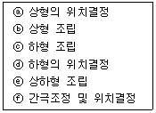
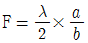
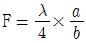
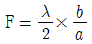
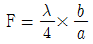

사출(프레스)금형산업기사 (2015-08-16 기출문제)
1과목: 금형설계
1. 프로그래시브 작업을 위한 스트립 레이아웃을 설계할 때 고려할 사항이 아닌 것은?
- 재료의 폭 및 잔폭
- 스트립의 압연 방향
- 프레스다이 하이트
- 절단이나 성형 개소의 위치
(정답률: 73%)

2. 직경 200 mm의 블랭크 소재를 직경 50 mm의 원통 용기로 드로잉 가공하려고 한다. 몇 회의 드로잉 공정이 필요한가? (단, 1차 드로잉률은 0.55, 재드로잉률은 0.75로 기준한다.)
- 2회
- 3회
- 4회
- 5회
(정답률: 70%)
3. 트랜스퍼 프레스가공의 특징으로 옳은 것은?
- 설치공간을 절약할 수 없다.
- 위치결정 분리, 스크랩 처리가 중요하지 않다.
- 제품 설계에서부터 가공성 검토가 필요하지 않다.
- 안정성 및 생산성이 높고 작업 인원 감소가 가능하다.
(정답률: 73%)
4. 프로그레시브 금형(progressive die)의 가공 공정도를 설계할 때 고려하여야 할 사항으로 틀린 것은?
- 금형의 강도와 수명을 고려한다.
- 제품의 생산비용을 고려하여 공정 수를 줄인다.
- 공정 수를 많게 하여 제품을 정밀하게 가공한다.
- 작업을 안전하고 쉽게 연속 가공할 수 있도록 가공도를 낮춘다.
(정답률: 66%)
5. 프로그레시브 금형(progressive die)에서 두께가 2mm 인 연강판으로 직경이 50mm인 원판을 블랭킹 하려고 할 때 필요한 전단력(kgf)은 약 얼마인가? (단, 전단저항은 32 kgf/mm2 이다.)
- 10⑤4
- 11⑤3
- 12⑤3
- 13⑤3
(정답률: 63%)
6. 프로그레시브금형에서 이송방향을 좌측에서 우측으로 할 때 사용할 수 없는 다이세트는?
- BB형
- CB형
- DB형
- FB형
(정답률: 63%)
7. 다음 중 프레스금형의 조립 시 필요한 사항과 거리가 먼 것은?
- 스크랩 맞춤
- 타이밍 맞춤
- 클리어런스 맞춤
- 시험타발 전 검사
(정답률: 44%)
8. 프레스 기계의 안전에 관한 사항 중 틀린 것은?
- 작업 전 정해진 급유를 반드시 실시한다.
- 작업을 중지할 때에는 반드시 스위치를 절연시킨다.
- 재료의 송급이나 가공물을 취출할 때는 반드시 손으로 작업한다.
- 운전 중에는 어떠한 작업일지라도 금형사이에 손을 절대로 넣어서는 안된다.
(정답률: 91%)
9. 플러그인 타입이라고도 하며 가장 정밀한 제품생산용 프로그레시브 금형의 다이플레이트 분할 형식은?
- 요크 형식
- 조합 형식
- 솔리드 형식
- 인서트 형식
(정답률: 79%)
10. 철판을 사용하여 굽힘가공 시 균열이 발생하였을 때의 대책으로 틀린 것은?
- 펀치 R을 작게 한다.
- 신장이 큰 피가공재로 바꾼다.
- 클리어런스를 판 두께와 같거나 다소 크게 한다.
- 피가공재의 롤방햐과 굽힘선을 평행으로 하지 않는다.
(정답률: 49%)
11. 나사 부가 있는 성형품의 이형방법 설명 중 틀린 것은?
- 강제적으로 빼내는 방법 : 수지종류나 성형나사의 형상에 따라 제약을 받으나 암나사, 수나사에 관계없이 적용 할 수 있다.
- 코어를 고정하는 방법 : 시험제작, 극소량의 생산, 또는 강도사의 문제로 자동나사 빼기 장치를 사용할 수 없을 경우에 사용한다.
- 분할형 코어에 의한 방법 : 수나사에 적합하며 금형구조나 제작이 비교적 간단하며 이젝팅도 확실하다.
- 회전기구에 의한 방법 : 회전시키는 방법은 1개만을 성형하므로 능률이 떨어진다.
(정답률: 62%)
12. 일반적으로 스프루 로크 핀의 언더컷 량은?
- 1mm정도
- 3mm정도
- 5mm정도
- 7mm정도
(정답률: 62%)
13. 금형설계에서 성형품 치수 150mm, 성형수축률 5/1000 일 때, 상온의 금형 치수(mm)는?
- 148.75
- 149.25
- 150.75
- 151.25
(정답률: 78%)
14. 금형설계에서 러너의 치수 결정시 고려하여야 할 사항이 아닌 것은?
- 러너의 길이
- 러너의 단면적
- 사출성형기의 용량
- 성형품의 살 두께 및 중량
(정답률: 75%)
15. 성형기의 형체력(F)이 150 ton, 캐비티 내의 작용 수지압력은 500 kgf/cm2로 성형하고자 할 때, 이 성형기에서 성형이 가능한 성형품의 투영면적(cm2)은?
- 200
- 300
- 400
- 500
(정답률: 74%)
16. 슬라이드 코어의 위치를 결정하는 동시에, 수지압력에 의해 슬라이드 코어가 후퇴하려고 하는 것을 방지하는 언더컷 처리 기구는?
- 판캠
- 스프링
- 경사 핀
- 로킹 블록
(정답률: 76%)
17. 사출금형에서 충전부족에 의한 성형불량원인으로 적합하지 않은 것은?
- 사출압력이 낮다.
- 금형 온도가 높다.
- 사출속도가 너무 느리다.
- 캐비티 내의 공기가 잘 빠지지 못한다.
(정답률: 75%)
18. 금형설계에서 게이트 위치 선정과 러너의 크기를 설정하고, 수지의 유동 흐름 등을 해석하는 방법은?
- CAD
- CAE
- CAM
- CAT
(정답률: 85%)
19. 결정성 수지의 종류가 아닌 것은?
- 폴리스틸렌(PS)
- 폴리아미드(PA)
- 폴르프로필렌(PP)
- 폴리카보네이트(PC)
(정답률: 43%)
20. 열가소성, 열경화성의 모든 플라스틱에 적용되며 전자동으로 복잡한 형상을 쉽게 성형할 수 있는 성형법은?
- 사출성형
- 압출성형
- 압축성형
- 진공성형
(정답률: 83%)
2과목: 기계가공법 및 안전관리
21. 프레스기계에서 조작을 양손으로 동시에 하지 않으면 기계가 가동되지 않으며 한손이라도 떼어내면 기계가 급정지 또는 급상승하게 하는 방호장치는?
- 가드식
- 수인식
- 양수조작식
- 손쳐내기식
(정답률: 84%)
22. 다음 열거한 것 중에서 초음파 가공의 특징에 속하지 않는 것은?
- 가공오차가 0.01mm 까지 가능하다.
- 유리, 수정 등의 가공이 가능하다.
- 가공물체에 가공 변형이 남는다.
- 공구이외에 거의 마모 부품이 없다.
(정답률: 74%)
23. 밀링머신 가공에서 커터의 날수 8개 1날당 이송량 0.15mm, 회전수가 540rpm일 때 밀링테이블의 이송속도(mm/min)는?
- 348
- 432
- 528
- 648
(정답률: 57%)
24. 다음 재료 중에서 방전 가공의 전극 재질이 아닌 것은?
- 구리
- 텅스텐
- 그라파이트(grapite)
- 초경합금
(정답률: 61%)
25. 직선왕복운동을 통하여 작업이 진행되며 절삭행정에서는 표준절삭 속도로 작업하고 귀환행정에서는 빠른 속도로 귀환하는 행정기구가 적용된 기계로만 짝지어진 것은?
- 플레이너, 셰이퍼, 슬로터
- 선반, 밀링머신, 플레이너
- 플레이너, 슬로터, 띠톱기계
- 브로우치머신, 플레이너, 드릴머신
(정답률: 65%)
26. 밀링 작업시 하향절삭의 장점이 아닌 것은?
- 동력소비가 적다.
- 가공면이 깨끗하다.
- 날끝의 마모가 심하다.
- 뒤 틈(Back lash) 제거장치가 필요하다.
(정답률: 69%)
27. 프레스 금형에서 고정스트리퍼형의 트리밍 다이 조립순서를 올바르게 나열한 것은?

- ⓐ→ⓑ→ⓒ→ⓓ→ⓔ→ⓕ
- ⓐ→ⓑ→ⓕ→ⓓ→ⓒ→ⓔ
- ⓑ→ⓒ→ⓐ→ⓓ→ⓕ→ⓔ
- ⓓ→ⓑ→ⓒ→ⓕ→ⓔ→ⓐ
(정답률: 69%)
28. 고주파 유도 가열로 표면경화 할 때의 장점으로 틀린 것은?
- 가열시간이 길다.
- 산화가 적다.
- 응력이 적게 발생한다.
- 탈탄이 적다.
(정답률: 70%)
29. 금형제작에서 건 드릴(gun deill)의 사용목적으로 옳은 것은?
- 핀 가공
- 코어 가공
- 캐비티 가공
- 냉각수 구멍가공
(정답률: 75%)
30. G코드 중에 극좌표 지령을 취소하는 코드는?
- G10
- G15
- G16
- G17
(정답률: 52%)
31. 프레스기계에서 금형을 부착, 해체 또는 조정 작업을 하는 때에 사용할 수 있는 안전조치는?
- 키복
- 안전블록
- 광전자식 안전장치
- 양수 조작식 안전장치
(정답률: 66%)
32. CNC 공작기계에서 100 rpm으로 회전하는 스핀들에서 2회전 드웰을 프로그래밍 하려면 몇 초간 정지 지령을 사용하는가?
- 0.8
- 1.2
- 1.5
- 1.8
(정답률: 57%)
33. 연삭숫돌의 표시에 WA46-H8V 라고 되어 있을 때 H는 무엇을 나타내는가?
- 입도
- 조직
- 결합도
- 결합제
(정답률: 66%)
34. 금속침투법에 대한 설명으로 옳은 것은?
- 세라다이징이란 금속표면에 질소, 탄소막을 만드는 것이다.
- 칼로라이징이란 금속표면에 크롬(Cr)을 침투시켜 내식성을 증가시키는 것이다.
- 크로마이징이란 금속표면에 알루미늄(Al)을 침투시켜 강도를 증가시키는 것이다.
- 실리코나이징이란 금속표면에 규소(Si)를 침투시켜 내식성을 증가시키는 것이다.
(정답률: 65%)
35. 금형의 경면작업을 할 때 콤파운드(compound)를 사용하는 작업은?
- 버핑
- 폴리싱
- 슈퍼피니싱
- 샌드블라스팅
(정답률: 44%)
36. 금형을 높은 정밀도와 숙련이 요구되는 노동 집약적 제품이다. 금형 제작비를 낮추는 방법이 아닌 것은?
- 금형의 정밀도를 최대한 높여 제작한다.
- 열처리 할 때 변형을 고려한 적절한 재료를 선택한다.
- 제품의 용도에 따라 금형의 정밀도를 정하여 제작한다.
- NC공작기계로 제작하여 정밀도를 향상시키고 제작시간을 단축시킨다.
(정답률: 77%)
37. 다음 가공방법 중 가공물의 표면정밀도를 가장 정밀하게 가공할 수 있는 방법은?
- 선반
- 슈퍼피니싱
- 드릴링
- 밀링
(정답률: 81%)
38. 금속재료를 회전하는 2개의 롤러 사이로 통과시켜 두께나 지름을 줄이는 가공법은?
- 압연(rolling)
- 단조(forging)
- 압출(extrusion)
- 인발(drawwing)
(정답률: 70%)
39. 리밍(reaming)작업을 할 때 떨림을 없애기 위한 방법은?
- 날의 간격을 같게 한다.
- 절삭속도를 고속으로 한다.
- 날의 간격을 같지 않게 한다.
- 드릴의 절삭속도와 같게 한다.
(정답률: 56%)
40. CNC 와이어 컷 가공에 있어서 세컨드 컷 가공의 효과가 아닌 것은?
- 펀치 형상에서의 돌기부분 가공
- 거친 가공면과 가공면의 연화층 제거
- 가공물의 내용응력 개방 후 형상수정
- 코너부 형상 에러 및 가공면의 진직정도 수정
(정답률: 60%)
3과목: 금형재료 및 정밀계측
41. 기어 측정에 있어서 오버핀 법을 기어의 무엇을 측정하는 방법인가?
- 이 두께
- 압력 각
- 모듈 크기
- 피치원 지름
(정답률: 60%)
42. 다음 중 나사산의 각도를 측정하는 방법이 아닌 것은?
- 투영기에 의한 방법
- 삼침법에 의한 방법
- 공구 현미경에 의한 방법
- 만능 측정 현미경에 의한 방법
(정답률: 53%)
43. 가공물을 직접 측정하여 25.022mm의 측정값을 얻었다. 사용한 측정기에 –3μm의 오차가 있다고 하면 참값은 몇 mm 인가?
- 25.019
- 25.022
- 25.025
- 22.022
(정답률: 58%)
44. 다음 중 측정값이 참값에 대한 한쪽으로의 치우침이 작은 강도를 의미하는 것은?
- 정도
- 정밀도
- 정확도
- 평균도
(정답률: 57%)
45. 공구현미경으로 측정할 수 없는 것은?
- 나사의 피치 측정
- 표면거칠기의 측정
- 중심거리 측정
- 테이퍼 측정
(정답률: 63%)
46. 광선 정반으로 평면도를 측정하고자 할 때 평면도 F를 구하는 공식은? (단, 이웃하는 간석무늬의 중심거리를 a, 간석무늬의 굽은 양 b, 사용하는 빛의 파장은 λ이다.)




(정답률: 62%)
47. 공기마이크로미터의 장점에 관한 설명으로 틀린 것은?
- 배율과 정도가 높아서 미소변위의 측정이 가능하다.
- 피 측저물에 부착하고 있는 기름이나 먼지를 분출공기로 불어내기 때문에 정확한 측정이 가능하다.
- 일반적으로 내경측정은 어려운 일인데 공기마이크로미터를 사용하면 쉽게 정도가 높은 측정을 할 수 있다.
- 응답시간이 0.01초 수준으로 매우 빠른편이다.
(정답률: 61%)
48. 외측 마이크로미터의 지름 5mm인 강구를 넣어 측정력 9.8N을 주었을 때 앤빌과 스핀들의 탄성적 접근량은? (단, Hertz의 경험식을 사용한다.)
- 1.2 μm
- 2.2 μm
- 3.2 μm
- 4.2 μm
(정답률: 41%)
49. 다음 중 중간 끼워 맞춤에 대한 설명으로 옳은 것은?
- 구멍과 축의 실제치수에 따라 억지 끼워맞춤이 되는 경우
- 구멍과 축의 실제치수에 따라 틈새가 있는 끼워맞춤이 되는 경우
- 구멍과 축의 실제치수에 따라 억지 또는 헐거운 끼워맞춤이 되는 경우
- 구멍과 축의 실제치수에 따라 헐거운 끼워맞춤이 되는 경우
(정답률: 67%)
50. 다음 중 아베의 원리를 만족하는 측정기는?
- M형 버니어 캘리퍼스
- 표준자 이동형 측장기
- 캘리퍼형 마이크로미터
- HT형 하이트 게이지
(정답률: 47%)
51. 구조용강에서 뜨임취성이 없고 용접성 및 고온 강도가 좋아서 각종 축, 기어, 강력 볼트 등의 사용에 적합한 합금강은?
- 크롬-몰리브덴강
- 니켈-텅스텐강
- 망간-크롬강
- 망간-규소강
(정답률: 59%)
52. 다음 철강 재료 중 담금질 열처리에 의해 경화되지 않는 것은?
- 순철
- 탄소강
- 탄소 공구강
- 고속도 공구강
(정답률: 69%)
53. 탄소강은 일반적으로 충격치가 천이온도에 도달하면 현저히 감소되어 취성이 생긴다. 이것을 무엇이라 하는가?
- 저온취성
- 청열취성
- 고온취성
- 적열취성
(정답률: 55%)
54. 냉간가공용 다이스강이 아닌 것은?
- Cr-Mo-W-V 강
- Ni-Cr-Mo-V 강
- W-Cr-Mn 강
- W-Cr 강
(정답률: 50%)
55. 체심입방격자와 면심입방격자의 원자 충전율은 얼마인가?
- 체심입방격자 : 68%, 면심입방격자 : 74%
- 체심입방격자 : 74%, 면심입방격자 : 68%
- 체심입방격자 : 52%, 면심입방격자 : 74%
- 체심입방격자 : 74%, 면심입방격자 : 52%
(정답률: 49%)
56. 다음 탄소강 중 표준상태에서 인장강도가 최대인 것은?
- 아공석강
- 공석강
- 과공석강
- 저탄소강
(정답률: 48%)
57. 금속의 공통된 성질에 대한 설명으로 틀린 것은?
- 전성 및 연성이 좋다.
- 전기 및 열의 부도체이다.
- 비중이 크고 금속 특유의 광택을 갖는다.
- 수은을 제외한 모든 금속은 상온에서 고체이며 결정체이다.
(정답률: 68%)
58. 다음 중 비중이 가장 낮으며 주로 항공기 부품으로 많이 사용되는 합금은?
- Su 합금
- Mg 합금
- Ti 합금
- Cu 합금
(정답률: 65%)
59. 다음 중 열가소성 수지는 어느 것인가?
- 페놀 수지
- 요소 수지
- 멜라민 수지
- 폴리에틸렌 수지
(정답률: 69%)
60. 다음 중 대표적인 투광성 세라믹스가 아닌 것은?
- 알루미나
- 마그네시아
- 탄화규소
- 지르코니아
(정답률: 51%)